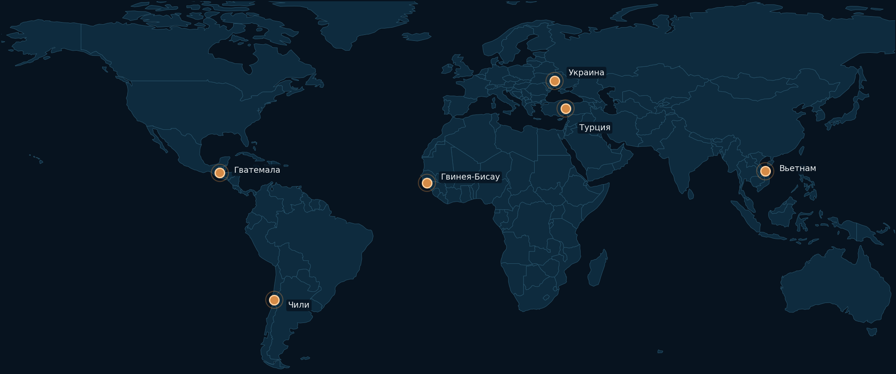

Горные работы и геология
Планирование и оптимизация горных работ · геологическое моделирование · оценка запасов · маркшейдерия · GIS · разрешительная документация

Инжиниринг, технологическая проработка, проектирование, подбор оборудования и инженерное сопровождение промышленных проектов.
Обсудить проектMineral Solutions — проектно-инжиниринговая компания, специализирующаяся на комплексных решениях для горнодобывающей, обогатительной и металлургической промышленности.
Деятельность компании охватывает ключевые этапы реализации проектов — от технической концепции и проектирования до подбора и поставки оборудования и инженерного сопровождения.
В основе Mineral Solutions — практический отраслевой опыт, инженерная экспертиза и понимание полного производственного цикла — от добычи сырья до получения готового продукта.
Планирование и оптимизация горных работ · геологическое моделирование · оценка запасов · маркшейдерия · GIS · разрешительная документация
Технологические схемы · проектирование обогатительных фабрик · материальные балансы · оптимизация процессов · модернизация производств
Исследование сырья · испытания на обогатимость · минералогия · проверка технологических схем · интерпретация результатов
ТЭО · PFS · FEED · проектная и рабочая документация · генплан · промышленные здания и сооружения · инженерные сети
Техническое обследование · аудит технологических линий · анализ узких мест · реконструкция и модернизация
Технические требования · анализ производителей · адаптация · комплектация · техническое сопровождение поставки
На компьютере выберите направление на схеме. На телефоне — нажмите на нужную категорию оборудования.

Два представления одного портфеля: география проектов и подробный референс-лист. Они открываются по отдельности и не дублируют друг друга на странице.

Подробный перечень по актуальному референс-листу компании.
Создание с нуля открытого буроугольного разреза в сложных гидротехнических условиях. Производительность — 300 000 тонн/год.
Проработка освоения месторождения; водопонижение и дренаж; рабочий проект; сопровождение согласований; инженерная подготовка и непосредственный запуск горного предприятия.
Реактивация остановленного горнодобывающего предприятия и восстановление производственного цикла добычи никелевой руды. Производительность — 3 100 000 влажных метрических тонн никелевой руды в год.
Предпроектная проработка; технологическая схема добычи; инженерные решения; спецификации; организация производства; подбор и поставка оборудования.
Создание нового горнодобывающего предприятия по добыче никелевой руды с нуля, включая формирование всей технологической и производственной концепции объекта. Производительность — 560 000 влажных метрических тонн в год.
ТЭО; технологические решения по добыче; производственная схема; организация горных работ; подбор и поставка оборудования; инженерное и производственное сопровождение.
Создание комплексной технологии мокрого и сухого обогащения полиминеральных песков производительностью 250 т/ч.
Flowsheet; материальные балансы; PFD; критерии проектирования; подбор оборудования; гравитационная, магнитная и электростатическая сепарация; получение ильменита, циркона, рутила и монацитового полупродукта; сопровождение строительства и пусконаладки.
Разработка нового горнодобывающего и обогатительного предприятия: добыча — 420 000 тонн/год, переработка руды — 50 тонн/час.
Проектирование горных работ; технология обогащения; организация производственного цикла; K-Mine GIS и планирование; дороги, склады, дренаж и логистика; подбор и поставка оборудования; EPCM-сопровождение.
Модернизация технологии разделения коллективных концентратов и разработка технологии обогащения высококонцентрированного монацитового продукта.
Новая схема сухой магнитной и электростатической сепарации; мокрая гравитационная схема обогащения монацита на концентрационных столах.
Разработка нового предприятия по добыче и обогащению титанового сырья.
Технология добычи и обогащения; технологические и инженерные решения; формирование технологической схемы; подбор и поставка оборудования.
Комплекс сгущения хвостов производительностью 67 650 м³/ч по пульпе / 2 410 т/ч по сухому продукту, включая четыре сгустителя HRT-60.
Технологическая интеграция; водно-шламовые балансы; PFD/P&ID; пульпопроводы и насосные станции; реагентное хозяйство; оборотное водоснабжение; дренаж; utilities; строительные решения; BIM; автоматизация; подготовка данных для HAZOP; междисциплинарная координация.
Разработка и внедрение технологии производства металлургической порошковой проволоки / cored wire для ферросплавного направления.
Разработка технологии; инженерная проработка; проектирование технологической линии; внедрение производственного решения. Роль — технологический консультант и разработчик в качестве субподрядчика. Производительность — 1 000 т/мес.
Оценка реализуемости одного из приоритетных проектов программы декарбонизации AMKR — внедрение технологии обратной флотации.
Технологический консультант и разработчик в составе субподрядчика; анализ и разработка решений по обратной флотации для производительности порядка 1 500 т/ч.
Разработка технологии классификации железорудных окатышей для действующего металлургического / горно-обогатительного производства.
Технологическая схема классификации; инженерная проработка; технологические расчёты; подбор и интеграция оборудования в существующий производственный процесс.
Создание технологического комплекса для концентрации и доизвлечения полезных компонентов.
Разработка технологической схемы; инженерная проработка; подбор и интеграция технологического оборудования.
Модернизация отдельных переделов горно-обогатительных производств.
Инженерная проработка, изготовление и поставка специализированного оборудования с интеграцией в существующую технологическую схему.
Техническая, технологическая и экономическая проработка проекта.
Планы горных работ · схемы · материальные балансы · параметры процессов.
Генплан · здания и сооружения · конструкции · инженерные сети.
Требования · спецификации · подбор · адаптация.
Обследование · ограничения · варианты технического перевооружения.
Подготовка документации · сопровождение экспертизы · отработка замечаний.
Технический аудит · независимая оценка · due diligence · сопровождение заказчика.
Горные работы · обогащение · металлургия · выбор технологических решений.
Оценка объектов, оборудования и инфраструктуры · рекомендации по модернизации.
Отдельные разделы или комплексная проектная и рабочая документация.
Горная · технологическая · строительная · инфраструктурная части проекта.
Съёмка · контроль · расчёты объёмов · документация · GIS-поддержка.
Опишите проект или вопрос — сообщение будет направлено на office@mineral-solutions.com.ua